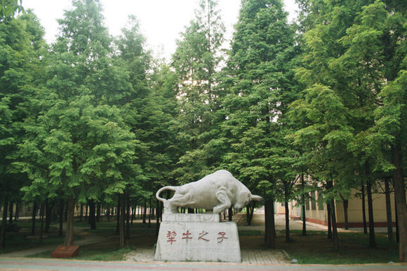
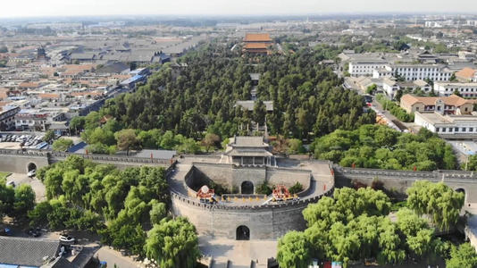
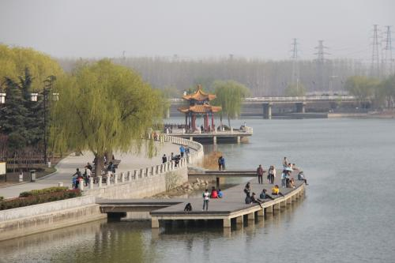
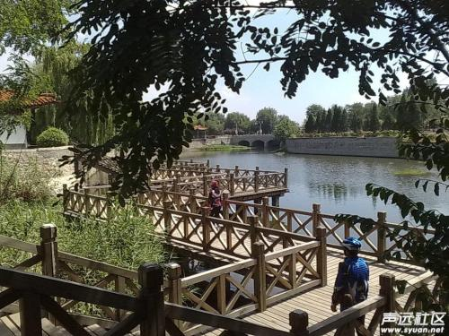
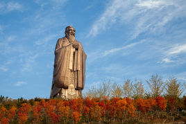
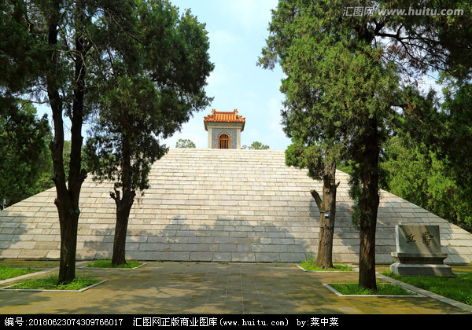
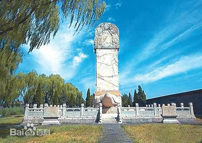

这不是211，跟不是985，也不是双一流，这就是一所普普通通的本科学校。 但是，曲师大的数学系，物理挺牛逼呀。 这里的学长学姐们非常努力，奋斗出了曲阜师范大学的考研奇迹. 高中的时候老是路过那里，绿油油的一片，I like.
曲阜最著名的也就是三孔了吧，市中心的景点几乎都是孔家的。 也有不少地方是免费的，emmm其他的我不能说逛的次数多，由于我姓孔，去孔林的次数最多了。这真是个安静的地方！ 进去就肃静了，尽管有时人非常非常多，但那些参天的古木好像都能隔绝一切噪音！而且非常凉快！！关于儒学啥的建筑有好多鸭！！ 真的到处是论语，然鹅我觉得我们曲阜人的道德素养还不是很高， 也有很多不文明的事情发生，不过这几年大家真的有改变，曲阜真的比以前美了！ 我们也修建了几个新的公园，蛮好的。夜晚和朋友家人在城墙周围散步，超级温馨！ 学校旁边好多退休的老爷爷老奶奶散步，能遇见老师偶==因为我以前老是和朋友翘晚课出去溜达感受气候。 想家了~~~~
对于曲阜人来说（至少对我来说），这里是来一场说走就走的旅行的好去处。一块的公交然后免费游山玩水，吃山上的果子！真的是回归了自然，那里的肉都非常鲜嫩! 简直是一生推啊！在山上吃的鸡肉是我吃过最好吃的鸡肉了！
有水有草地，适合谈恋爱emmm
 还是由于孔夫子。。尼山圣境也就是一个小小的博物馆的感觉，古风周边比较多。开了一次春晚就比较火了，晚上有灯光秀,挺漂亮。 说实话，尼山圣境不如它旁边的小山好玩。。
嘻嘻嘻之气那不觉得我家周围有什么特别，现在想想可以走走的地方还是有的哈哈
这是俩村里的小小的园林，面对面建筑的，有当村的老爷爷们在看门，哎呀有小时候的回忆鸭！ 我和我滴小伙伴们小时候还经常去溜达呢，捉鱼，爬少昊陵。。。这里也很有古风气息，旧旧的门框，香炉，苍老的大树。安静的庭院！
 又是孔夫子的，传说的孔子晒书的地方，又是村里的。。
公园公园，适合散步，溜小孩子啦啦啦，很舒服的地方。百草丰茂，适合散步 聊天 看书 思考人生